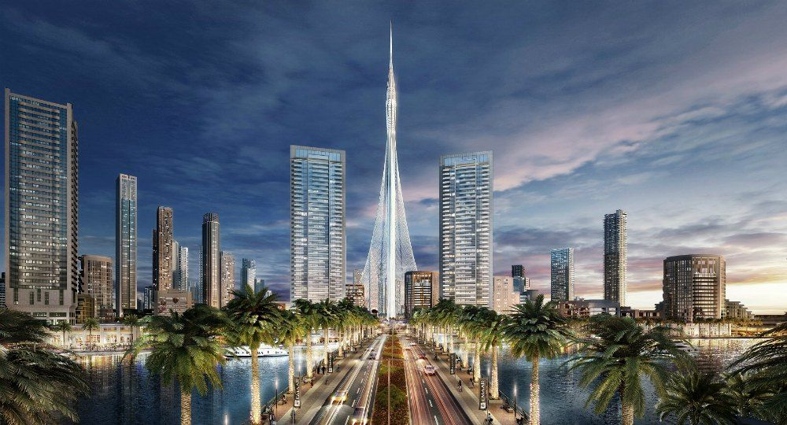
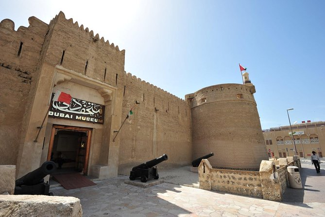
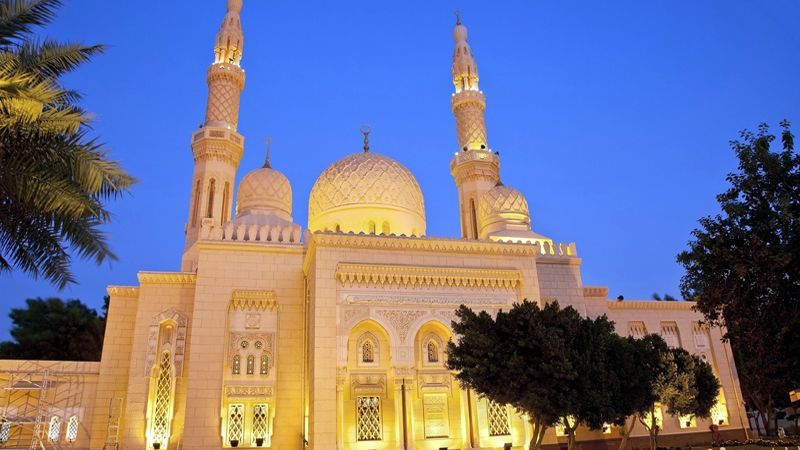
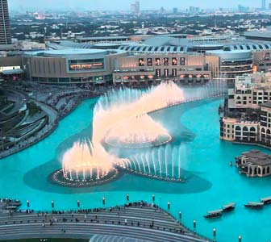
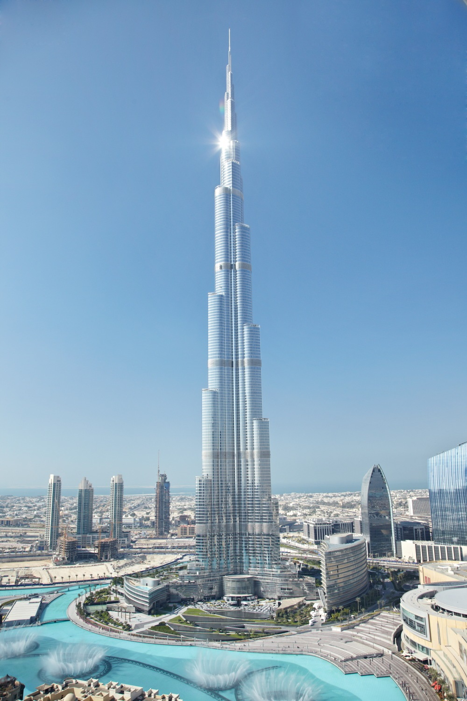
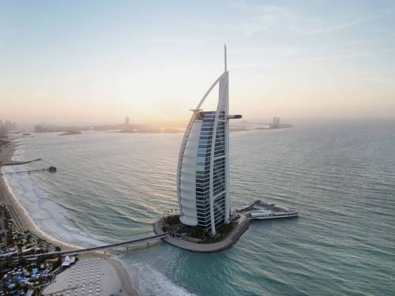

Informacion sobre la ciudad de Dubai:
- Dubai es la ciudad más grande y famosa de los Emiratos Árabes Unidos, seguida por Abu Dhabi, la capital de Emiratos. Se encuentra ubicado en el Golfo Pérsico, entre Sharjah y Abu Dhabi
- Conocida también como la ciudad de Dubai, está dividida por Dubai Creek, una brecha de agua salada que divide la ciudad. Al norte de la brecha, la zona alberga gran cantidad de especias, pescado y oro en zocos. El lado sur, en cambio, es una zona con una fuerte influencia india
- Gran parte de los extranjeros viven en la zona de Jumeirah, donde hay una gran cantidad de escuelas y viviendas de alta calidad
- Es una de las metrópolis de más rápido crecimiento en el mundo y alberga algunos de los principales e impresionantes proyectos (rascacielos y edificios de alta tecnología) de construcción del mundo
- Pasó de ser un lugar de asentamientos beduinos a una ciudad moderna con más de 500 rascacielos
- Dubái es la ciudad más importante de los siete emiratos que componen los Emiratos Árabes Unidos. La ciudad se ha expandido cerca de la costa y tiene más de 50 kilómetros de extensión
Sitios de interes en Dubai
Dubai es una ciudad que genera un gran número de visitas cada mes, hay muchos puntos de interés que merece la pena visitar algunos son:
Dubai Creek.
Es un entrante de agua salada natural que penetra varios kilómetros de tierra firme. En sus orillas se asentaron los primeros habitantes de Dubai.

Museo de Dubai.
Muestra la historia de la ciudad, desde su establecimiento, economía primitiva hasta los proyectos más importantes.

Mezquita Jumeirah.
Turísticamente hablando, la Mezquita Jumeirah es la más importante de la ciudad de Dubai. Las visitas al interior de este luagr son guiadas y duran aproximadamente 1 hora y 15 minutos.

Fuente de Dubai.
Es la fuente más grande del mundo.

Burj Khalifa.
Es uno de los edificios más altos del mundo con 828 metros. Fue construido por más de 12.000 personas de 30 países. Anteriormente fue conocido como Burj Dubai (Torre de Dubái).

Burj Al Arab.
Es un hotel de lujo con una altura de 321 metros, es el cuarto hotel más alto de todo el mundo.

Historia de la ciudad de Dubai
Originalmente, Dubai era una colonia de pescadores. En 1830 una descendencia de la tribu de Bani Originalmente, Dubai era una colonia de pescadores. En 1830 una descendencia de la tribu de Bani Yas del oasis de Liwa dirigida por la familia de Maktoum se apoderó de la ciudad y la sigue gobernando hasta la fecha.
En sus comienzos, las actividades tradicionales incluían el pastoreo de ovejas y cabras, así como el cultivo de dátiles, pesca, búsqueda de perlas y comercio en general. A principios del siglo XX Dubai era famosa por albergar los zocos más grandes del litoral.
Cultura de la ciudad de Dubai
La parte sur llamada Bur Dubai tiene una cultura tradicional y la zona norte, Deira tienen una cultura más cosmopolita. Con la llegada de un gran número de población extranjera. Con el Islam como la religión oficial, la cultura de Dubai se basa principalmente en el islamismo.